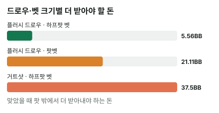

안녕하세요. I08에서 턴의 거트샷으로 팟벳을 맞았을 때, 콜이 본전이 되려면 맞은 리버에 72를 더 받아야 한다고 계산했죠.
오늘은 그 "맞았을 때 더 받아낼 돈"을 정면으로 다뤄요. 이걸 임플라이드 오즈라고 해요. 공식을 처음부터 만들어 보고, 드로우와 벳 크기마다 그 돈이 얼마인지 구해 볼게요. 그리고 이 계산이 왜 실제보다 좋게 나오기 쉬운지까지 짚어 볼게요.
이 글에서 배울 것
- 임플라이드 오즈의 뜻과, "더 받아야 할 돈"을 거꾸로 구하는 공식이 어떻게 생겼는지
- 아웃츠가 적거나 벳이 크면 그 돈이 왜 비현실적으로 커지는지
- 임플라이드 오즈를 과대평가하게 만드는 세 가지 함정과, 플랍에서 이 공식을 그대로 쓰면 안 되는 이유
1단계. 임플라이드 오즈가 뭔가요?
정의 한 줄
지금 팟만 보고 계산하는 게 보통 팟오즈(B06)예요. 임플라이드 오즈 = 드로우가 맞았을 때 다음 스트리트에서 상대에게 더 받아낼 돈까지 넣어서 보는 팟오즈예요.
적자 나는 첫 장사
비유하면 적자 나는 첫 장사예요. 오늘 가게 문을 여는 건 손해지만, 단골이 생겨서 다음에 더 벌 수 있다면 문을 열 만하죠. 다만 핵심은 "다음에 정말 벌 수 있느냐"예요.
2단계. 공식 — 거꾸로 풀기
가정부터
먼저 가정을 분명히 할게요. 리버 한 장만 남은 턴이고, 맞으면 우리가 이기고, 못 맞으면 진다(리버에 포기한다)고 볼게요. 그래서 이 글에서는 "질 확률" 대신 못 맞을 확률이라고 부를게요. 맞아도 지는 카드(더러운 아웃츠)가 있으면 이 가정이 깨지니, 그런 카드는 아웃츠에서 먼저 빼고 시작해요.
네 줄로 만들어요
본전이 되려면 "맞을 때 버는 돈"의 평균과 "못 맞을 때 잃는 돈"의 평균이 같아야 해요.
- 못 맞을 때 잃는 돈의 평균 = 못 맞을 확률 × 우리 콜
- 맞을 때 버는 돈의 평균 = 맞을 확률 × 맞을 때 버는 총액
- 둘이 같다고 놓으면 맞을 확률 × 총액 = 못 맞을 확률 × 우리 콜. 양쪽을 맞을 확률로 나누면 → 맞을 때 벌어야 하는 총액 = 우리 콜 × (못 맞을 확률 ÷ 맞을 확률)
- 이 총액에서 이미 팟에 있는 돈(원래 팟 + 상대 벳)을 빼면 → 리버에 더 받아내야 하는 돈
확률 대신 카드 장수로
"못 맞을 확률 ÷ 맞을 확률"은 카드 장수의 비율과 같아요. 두 확률 모두 같은 46장으로 나눈 값이라, 나누면 46이 지워지거든요. 그래서 공식은 이렇게 줄어요.
더 받아야 할 돈 = 우리 콜 × (못 맞는 카드 수 ÷ 맞는 카드 수) − 지금 팟
3단계. 예시 ① — 턴에 플러시 드로우, 하프팟 벳
그냥 콜하면 손해
팟 10BB에 상대가 5BB 벳. 리버 한 장에 플러시가 맞을 확률은 9 ÷ 46 = 약 19.57%예요(I01에서 셌죠). 필요 에퀴티는 25%라 모자라요.
맞으면 받는 돈은 원래 팟 10BB와 상대 벳 5BB, 15BB예요. 우리 콜 5BB는 원래 우리 돈이라 버는 돈에 넣지 않아요.
그냥 콜하면: 0.1957 × 15 − 0.8043 × 5 = 약 −1.09BB
46번 콜해 보면
리버 46장이 한 번씩 나온다고 치고, 같은 콜을 46번 해 볼게요.
- 못 맞는 37번: 5BB씩 잃어서 37 × 5 = 185를 잃어요
- 맞는 9번: 이 185를 9번 안에 다 벌어야 본전이에요. 한 번에 185 ÷ 9 = 약 20.56BB
맞는 한 판에 약 20.56BB를 벌어야 하는데, 지금 팟에서 받는 건 15BB뿐이죠. 그 차이가 더 받아야 할 돈이에요.
맞을 때 벌어야 하는 총액 = 5 × 37 ÷ 9 = 약 20.56BB 더 받아내야 하는 돈 = 20.56 − 15 = 약 5.56BB
이게 무슨 뜻이냐면, 공식의 "37 ÷ 9"는 못 맞는 판의 손해를 맞는 판 몇 번이 나눠 갚느냐를 적은 거예요. 리버에 플러시가 맞았을 때 상대가 약 5.56BB 이상 더 내줄 거라고 기대할 수 있으면 콜이 이득이에요. 지금 팟 15BB의 3분의 1 남짓이라, 작은 리버 벳 하나에 콜만 받아도 되는 크기예요.
I08 숫자로 검산하기
I08 장면(팟 9BB, 상대 9BB 팟벳, 거트샷 4장)을 오늘 공식에 넣어 볼게요. 46장으로 세면 9 × 42 ÷ 4 − 18 = 76.5가 나와요. 그런데 I08은 72였죠.
차이는 카드 장수예요. I08은 상대 레인지에 8이 없다고 보고 상대 두 장까지 뺀 44장으로 셌어요. 그러면 9 × 40 ÷ 4 − 18 = 72로 딱 맞아요. 상대 손을 알수록 남은 장수가 바뀌고, 공식은 그 장수를 그대로 받아요.
4단계. 예시 ② — 같은 벳, 거트샷이라면
아웃츠 4장, 맞을 확률 약 8.7%예요. 못 맞는 카드는 46 − 4 = 42장이에요.
맞을 때 벌어야 하는 총액 = 5 × 42 ÷ 4 = 52.5BB 더 받아내야 하는 돈 = 52.5 − 15 = 37.5BB
지금 팟이 15BB인데, 맞았을 때 그 두 배가 넘는 돈을 더 받아야 해요. 아웃츠가 9장에서 4장으로 반 넘게 줄었을 뿐인데, 더 받을 돈은 여섯 배 넘게 커졌어요. 맞는 판 수가 줄면, 그 몇 안 되는 판이 갚아야 할 손해가 한꺼번에 몰리기 때문이에요.
5단계. 예시 ③ — 플러시 드로우, 상대 벳이 크면
플러시 드로우라도 상대가 팟벳(10BB)을 걸면 어떨까요? 필요 에퀴티는 33.3%로 올라가요.
맞을 때 벌어야 하는 총액 = 10 × 37 ÷ 9 = 약 41.11BB 이번엔 지금 팟이 10 + 10 = 20BB라서, 더 받아내야 하는 돈 = 41.11 − 20 = 약 21.11BB
하프팟일 때 약 5.56BB였던 게 약 21.11BB로 네 배 가까이 커졌어요. 지금 팟도 커졌지만, 우리 콜이 두 배가 된 게 더 크게 작용했죠. 벳이 클수록 임플라이드 오즈로 메우기 어려워요.

왜 그럴까: 임플라이드 오즈는 왜 실제보다 좋게 계산되기 쉬울까?
"더 받을 돈"은 상대가 정해요
오늘 계산은 "얼마를 더 받아야 하는지"였어요. 그런데 실제로 얼마를 받을 수 있는지는 우리가 아니라 상대가 정해요. 여기서 계산이 낙관적으로 흐르기 쉬운 함정이 세 가지 있어요.
함정 ① — 맞은 카드가 상대에게도 보여요
같은 무늬 세 장이 깔리거나 스트레이트가 보이는 리버에서는, 상대도 위험을 느낄 수 있어요. 그러면 원페어 정도로는 큰 벳에 콜하지 않을 수 있죠. 우리가 맞은 리버가 상대가 가장 조심하는 리버일 수 있어요.
함정 ② — 받을 수 있는 돈에는 천장이 있어요
더 받을 수 있는 돈의 상한은 유효 스택이에요. 유효 스택은 우리와 상대 중 적은 쪽의 남은 스택이에요. 우리가 칩이 아무리 많아도, 상대에게 남은 칩보다 더 받을 수는 없죠.
천장 안에서도 다 받는 건 아니에요. 상대가 그 스택을 다 넣을 만한 핸드가 아니면 못 받아요. 남은 스택 = 받을 수 있는 돈이 아니라, 남은 스택은 받을 수 있는 돈의 최대치일 뿐이에요.
함정 ③ — 맞아도 지면 오히려 더 잃어요
I08 장면을 다시 볼게요. Hero 9♣7♣는 J-T-3-2 보드에서 리버 8이면 7-8-9-T-J 스트레이트가 돼요. 그런데 상대가 Q-9를 들었다면 같은 리버에서 8-9-T-J-Q, 더 높은 스트레이트예요. Hero는 맞았다고 크게 걸었다가 콜이나 레이즈를 맞고 더 잃어요.
플러시도 마찬가지예요. 보드에 하트 두 장이 있는 턴에서 6♥5♥로 쫓다가 리버 하트로 맞았는데, 상대가 A♥Q♥처럼 더 높은 하트 두 장을 들고 있었다면 상대가 더 높은 플러시예요. 이렇게 맞았을 때 오히려 더 잃는 돈을 역 임플라이드 오즈라고 해요. 임플라이드 오즈를 셀 때 이 몫은 빼야 해요.
자주 하는 실수
실수 1. "상대 스택이 많으니 임플라이드 오즈가 충분해" 거트샷이 하프팟 벳을 따라가려면 맞은 리버에 37.5BB를 더 받아야 했어요. 턴 콜 뒤 리버 팟은 10 + 5 + 5 = 20이니, 그 팟의 두 배 가까운 벳을 걸고 콜까지 받아야 하는 돈이에요. 상대 스택이 그보다 많아도, 스트레이트가 보이는 리버에서 그런 오버벳에 콜해 줄 핸드는 많지 않을 수 있어요. 대신 "이 금액이 리버 팟의 몇 배인가"로 바꿔서 상대가 콜하는 장면을 그려 봐요.
실수 2. 맞으면 무조건 이긴다고 보기 맞아도 질 수 있는 아웃츠를 그대로 세는 실수예요. 그 카드를 빼면 공식의 "맞는 카드 수"가 줄어서, 더 받아야 할 돈이 오히려 커져요. 아웃츠가 줄고 기준은 올라가니 두 번 손해죠. 대신 아웃츠를 먼저 깎고 공식에 넣고, 그 리버에서는 크게 걸지 않을 각오도 같이 해요.
실수 3. 플랍의 콜에 턴 공식을 그대로 쓰기 오늘 공식을 플랍에서 47장·리버까지 두 장 확률(× 4 어림)로 바꿔 넣는 실수예요. 두 장을 다 보려면 턴에 또 올 벳까지 내야 하니, 두 장 확률은 맞을 확률을 부풀려요. 반대로 턴에 못 맞으면 그 벳에 접을 수 있고, 턴에 맞으면 턴·리버 두 번에 걸쳐 받을 수도 있어서 계산이 한 줄로 끝나지 않아요. 대신 플랍에서는 "이번 콜로 턴 한 장을 산다"고 보고 계산하거나, 턴에서 다시 계산해요.
"상대가 누구냐에 따라 숫자를 어떻게 바꿔요?"
좋은 질문이에요. 결론부터 말하면 공식의 숫자는 안 바뀌어요. 플러시 하프팟이면 상대가 누구든 더 받아야 할 돈은 약 5.56BB예요. 바뀌는 건 그 돈을 실제로 받을 수 있다고 믿을 근거예요.
- 리버에 원페어로도 잘 따라오는 상대: 지금 팟보다 작은 금액은 기대해 볼 만해요. 지금 팟보다 큰 금액은 이런 상대라도 따로 따져 봐야 해요
- 위험한 리버에 잘 접는 상대: 작은 금액도 장담하기 어려워요. 맞은 카드가 티 나는 드로우일수록 더 그래요
- 처음 보는 상대: 금액이 지금 팟보다 작은지 큰지만으로 먼저 가늠해요
이게 무슨 뜻이냐면, 계산은 "얼마가 필요한가"를 정하고, 상대 읽기는 "그만큼 나올까"를 정해요. 둘을 섞지 않는 게 요령이에요.
선생님의 한마디
드로우로 모자란 콜을 할지 고민되면 이 순서로 해요.
- 맞아도 지는 아웃츠를 먼저 빼고 남은 아웃츠로 시작하기
- 칩을 내기 전에 "맞으면 리버에 얼마를 더 받아야 하나"를 숫자 하나로 정하기
- 그 숫자를 유효 스택과 대 보고, 상대가 맞은 리버에서 낼 장면이 안 그려지면 폴드
연습 문제
홀덤학습 에퀴티 계산기에서 내 카드를 고른 뒤 [콜 수익] 칸에 지금 팟(상대 벳 포함)과 콜 금액을 넣으면 필요 에퀴티가 나와요. 임플라이드 오즈는 손으로 이어서 계산해 보세요.
문제 1. 턴, 팟 20BB에 상대 5BB 벳. 양방 드로우(아웃츠 8장)라면 더 받아낼 돈이 필요할까요?
정답 보기
맞을 확률 8 ÷ 46 = 약 17.39%, 필요 에퀴티 5 ÷ (20 + 5 + 5) = 약 16.67% → 이미 넘어요. 계산하면 맞을 때 벌어야 하는 총액 = 5 × 38 ÷ 8 = 23.75BB, 지금 팟 25BB를 빼면 23.75 − 25 = −1.25BB예요. 더 받아야 할 돈이 음수라는 건, 지금 팟만으로도 이미 본전을 넘는다는 뜻이에요. 이 아웃츠 수와 이 벳 크기라면 더 받을 돈을 기대하지 않아도 콜할 수 있어요.
문제 2. 턴, 팟 16BB에 상대 8BB 벳(하프팟). 우리는 플러시 드로우(9장)이고 칩은 넉넉한데, 상대는 이 벳을 하고 나니 4BB만 남았어요. 리버에 맞으면 상대가 남은 칩을 다 낸다고 쳐도 콜할 만할까요?
정답 보기
필요 에퀴티 8 ÷ (16 + 8 + 8) = 25%, 맞을 확률 약 19.57%라 지금 팟만으로는 모자라요. 맞을 때 벌어야 하는 총액 = 8 × 37 ÷ 9 = 약 32.89BB, 지금 팟 24BB를 빼면 32.89 − 24 = 약 8.89BB를 더 받아야 해요. 그런데 유효 스택은 상대의 4BB예요. 상대가 리버에 전부 넣어 줘도 천장이 4BB라 모자라요. 폴드. 같은 플러시 드로우라도, 받을 수 있는 돈의 천장이 낮으면 임플라이드 오즈가 사라져요.
핵심 정리
- 임플라이드 오즈 = 맞았을 때 더 받아낼 돈까지 넣은 팟오즈
- 더 받아야 할 돈 = 우리 콜 × (못 맞는 카드 수 ÷ 맞는 카드 수) − 지금 팟. 상대 손을 알면 남은 장수도 바꿔 넣어요
- 아웃츠가 적거나 벳이 크면 그 돈이 빠르게 커져요
- 계산은 "더 받아야 할 돈"이고, 실제로 받을 수 있는 돈은 유효 스택이 천장이고 그 안에서 상대 핸드가 정해요
- 맞고도 지는 리버에서는 오히려 더 잃어요. 이게 역 임플라이드 오즈예요
정리하며
오늘은 지금은 손해인 드로우 콜이 본전이 되려면 맞았을 때 얼마를 더 받아야 하는지 거꾸로 구했어요.
턴의 플러시 드로우는 하프팟 벳이면 약 5.56BB만 더 받으면 됐지만, 거트샷은 37.5BB, 플러시 드로우라도 팟벳이면 약 21.11BB가 필요했죠. 그리고 이 숫자는 "받아야 할" 돈이라, 맞은 카드가 상대에게 보이거나, 유효 스택과 상대 핸드가 그만큼을 못 내거나, 맞아도 지는 경우를 생각하면 실제보다 좋게 계산되기 쉽다는 것, 플랍에서는 이 공식을 그대로 쓰면 안 된다는 것도 봤어요.
다음 글 I10에서는 상대 레인지를 %와 콤보로 표현하는 법을 다뤄요. 오늘처럼 상대 손을 "몇 장이 남았나"로 세던 것을, 레인지 전체의 크기로 세는 쪽으로 넓혀 봐요.
AI 작성 · 숫자는 계산 검증 · "더 받아낼 돈"은 본전 기준 계산(상대가 실제로 낼지는 따로 판단)